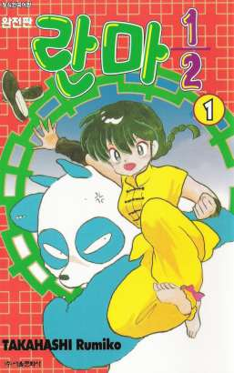
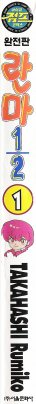
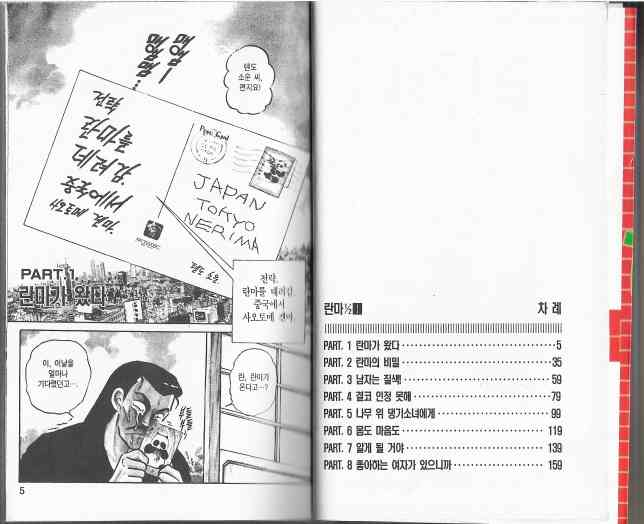
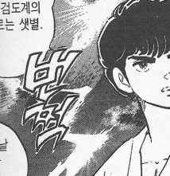

韓国語版「らんま1/2」
近所の古本屋で見つけました。2002.3.15第1版発行だそうです。

表紙。
絵は日本語版そのまま、タイトル文字のフォントも本物に似せてある。
ハングルで色々書かれているが説明すると上から順番に、
| 정식한국어판 | ： | 正式韓国語版 |
| 완전판 란마1/2 | ： | 完全版 らんま1/2 |
| TAKAHASHI Rumiko | | |
| (주)서울문화사 | ： | (株)ソウル文化社 |
と書いてある(多分)。この本は著者名がローマ字表記になっているが、韓国では皆そうというわけではなく、例えば巻末のヒカルの碁の宣伝にはホッタユミとオバタタケシがハングル表記になっていた。

背表紙。う～んやっぱり縦書きが出来ると綺麗に収まるなぁ。英語とは大違い。
一番上のマークは
아이큐 점프 코믹스 ： アイキュー ジャンプ コミックス
って…でもらんま1/2ってサンデーじゃん。何故にジャンプ?
IQ JUMPというのはジャンプとは関係ないのだろうか。でもヒカルの碁も載ってるしなあ。
で、肝腎の中身。

目次は日本と変わらない。
で、本文だが、なぜか横書きである。
うーむ…基本的には横書きじゃないと読みにくいのか。
右開きのまま文字が横書きって見にくくないんでしょうかね…?
吹き出しの形に無理やり合わせて横書きしているせいで文字が大分小さくなっています。ただでさえハングルは見分けにくい文字が多いのに…。
とはいえ一部の擬音や背景の文字は縦書きになっていて、英語版コミックによくあるように無理に斜めにして収めたり2行になったりということは少ないようである。
手書き文字もハングルに翻訳してあるのだが、上の手紙の部分など、似せようという気が感じられない。JAPAN TOKYO NERIMAが元の文字。原作は全てそれと同様の字である。
しかしさすがは「正式」。擬音の文字が丁寧に描き直してあって背景がトーンのところでもほとんど跡が見えない。
例えばこれ(P76より抜粋)。文字の右上に半濁点みたいなものがあるが日本語版でもあるのでどうやら関係ないようだ。ちなみに元は「カカッ」。「쩍」の下に見えるトーンのつぎ跡が「ッ」が書いてあったあたり。
どうでもいいことだがこのページを作るのに2時間かかった…。
いかに画質を落とさずファイルサイズを小さくするかにちょっとこだわってみたらあっという間に1時間…
戻る
もっと戻る